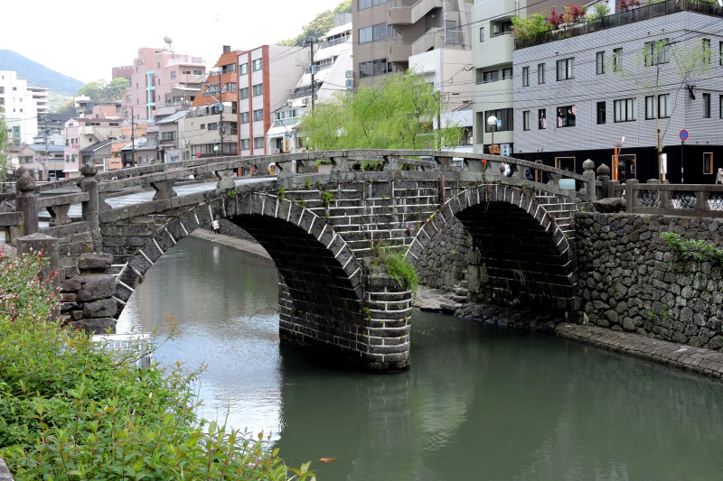
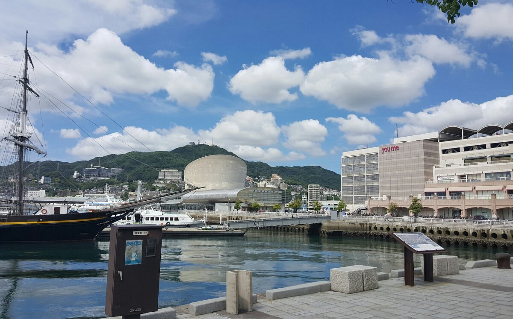
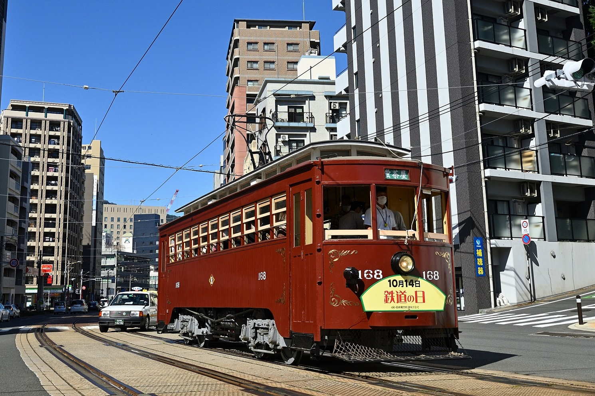
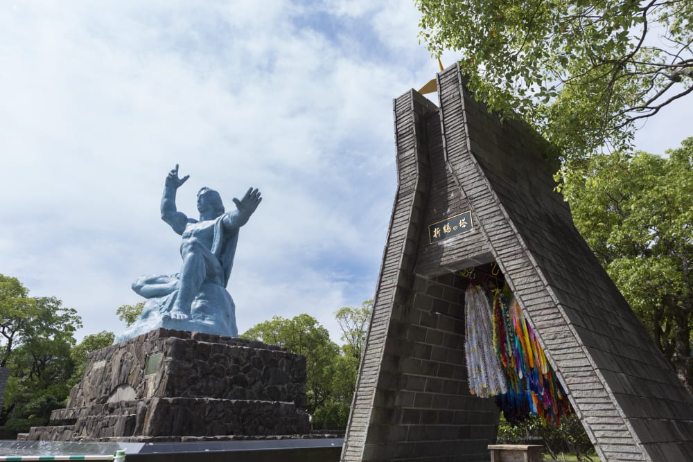
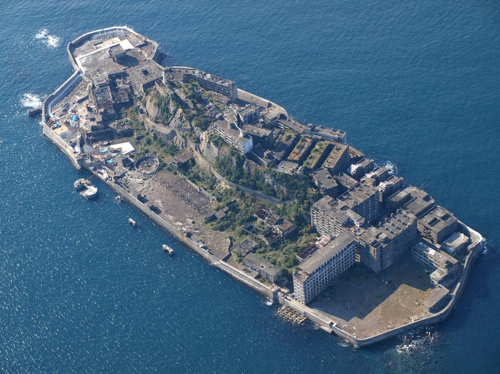
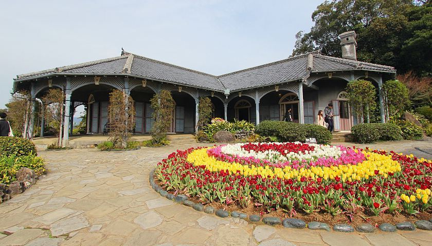

Нагасаки — портовый город на острове Кюсю, известный своей уникальной историей и культурным смешением. На протяжении веков он был одним из немногих японских городов, открытых для внешнего мира, что наложило отпечаток на его архитектуру и традиции. Сегодня Нагасаки — это город с богатым прошлым и спокойной атмосферой.
Нагасаки – это город на западном побережье острова Кюсю, расположенный в живописной бухте, окруженной горами и холмами. В отличие от большинства японских городов, которые строились на равнинах, Нагасаки растянулся амфитеатром вдоль склонов, и его улицы напоминают лабиринт из лестниц, тупиков и неожиданных поворотов. Местные жители шутят, что в Нагасаки нет горизонтали, только вертикаль, и к этому нужно просто привыкнуть. Город издавна был открыт иностранному влиянию: в XVI веке сюда пришли португальские миссионеры, затем голландские торговцы, и долгое время Нагасаки оставался единственным японским портом, через который страна общалась с западным миром.
Вместе с Хиросимой Нагасаки навсегда останется в памяти человечества как место, где в конце Второй мировой войны случилась атомная бомбардировка. Сегодня это уже далекое прошлое, и город полностью залечил свои раны. Но несколько памятников в центре до сих пор напоминают о тех событиях, не позволяя миру забыть, какой ценой дался мир на планете. В отличие от Хиросимы, где вся инфраструктура заточена под мемориал, Нагасаки живет обычной жизнью – это портовый, немного европейский и очень уютный город, который не хочет быть только музеем скорби.
Нагасаки также славится своей уникальной кухней, в которой смешались японские, китайские и голландские традиции. Здесь стоит попробовать чампон – густую лапшу с морепродуктами и овощами, придуманную китайскими студентами. А также касу-тоси – похлебку из свиных кишок, которая звучит страшновато, но на деле оказывается очень вкусной и сытной. Местные жители говорят, что настоящий Нагасаки познается не через музеи, а через его еду и уютные улочки.



Главной достопримечательностью города, связанной с бомбардировкой, является Парк Мира. Он расположен на холме, недалеко от эпицентра взрыва, и представляет собой просторную террасу с зелеными газонами и скульптурами, подаренными разными странами. В центре парка возвышается 10-метровая статуя Мира, созданная скульптором Сэйбо Китамурой. Правая рука статуи указывает на небо, откуда пришла угроза, левая рука протянута горизонтально, символизируя покой, а закрытые глаза означают молитву о жертвах. Рядом находится Фонтан Мира, а чуть поодаль – черный обелиск, отмечающий эпицентр. Парк не давит на эмоции, он скорее философский и спокойный. Местные жители приходят сюда не только почтить память, но и просто погулять с детьми или почитать книгу на скамейке.

Рядом с парком находится Мемориальный музей атомной бомбы. Экспозиция здесь меньше и камернее, чем в Хиросиме, но не менее сильная. В музее подробно рассказывается о том, как город восстанавливался после войны, и о медицинских последствиях радиации. Отдельный зал посвящен истории христианства в Нагасаки, и это не случайно: в городе всегда была сильная христианская община, и многие верующие погибли при бомбардировке.
Вторая важная достопримечательность – это остров-призрак Гунккандзима (остров Хасима). Этот крошечный кусок суши находится в море, в 15 километрах от порта Нагасаки. В начале XX века здесь обнаружили богатые залежи угля, и остров превратился в настоящий подземный город с бетонными жилыми домами, школой, больницей и даже кинотеатром. Когда шахты закрыли, люди покинули остров за одну ночь, оставив мебель, игрушки и личные вещи. Сегодня Гунккандзима – это заброшенные бетонные руины, заросшие плющом и постепенно разрушающиеся морем. Остров открыт для экскурсий, но высаживаться на него можно только с гидом и только на специально отведенных дорожках. Многие туристы узнали этот остров благодаря фильму о Джеймсе Бонде «007: Координаты Скайфолл», где он служил логовом злодея.

Третья обязательная точка – это район Гловер-гарден. Это холм с европейскими особняками XIX века, где жили иностранные купцы и миссионеры после открытия Японии миру. Самое известное здание – дом шотландского торговца Томаса Гловера, который считается старейшим западным деревянным зданием в Японии. С холма открывается потрясающий вид на порт и весь город. А еще здесь, согласно легенде, жила девушка, ставшая прообразом мадам Баттерфляй из знаменитой оперы Пуччини. Гловер-гарден – это самый неяпонский уголок Нагасаки, и именно здесь лучше всего чувствуется та самая «европейская атмосфера», которой так гордятся местные жители.

В завершение стоит сказать, что Нагасаки – это город контрастов. Здесь трагедия соседствует с красотой, а христианские церкви – с синтоистскими святилищами и буддийскими храмами. Не пытайтесь объять необъятное за один день. Лучше сосредоточьтесь на двух-трех местах: утром сходите в Парк Мира, днем отправьтесь на экскурсию на Гунккандзиму (билеты стоит бронировать заранее), а вечером поднимитесь в Гловер-гарден и посмотрите на закат над портом. И обязательно попробуйте нагасакский чампон – это лучший способ закончить день.